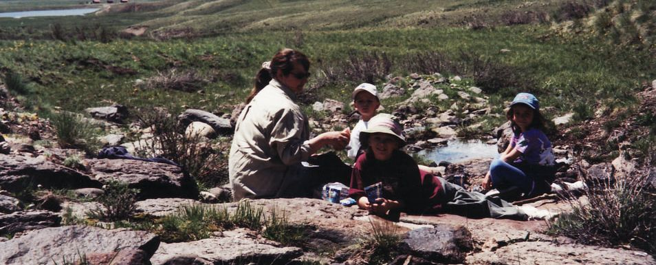
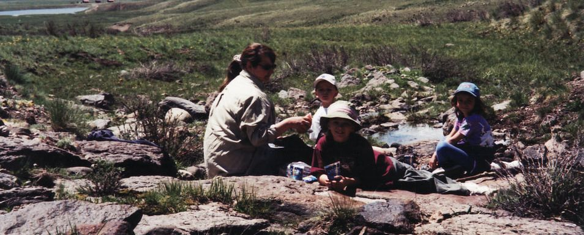

Outdoor Activities
The Continental Reservoir and Rito Hondo Reservoir, just a couple of miles up the road, are favorite fishing locations. Road Canyon and Rio Grande Reservoirs are a short drive. There are many smaller lakes nearby. North and South Clear Creek Falls are well known attractions. Jeep and ATV rentals are available in Creede, Lake City and South Fork. Wheeler Geologic Area is a must see for geology buffs and rockhounds. The Forest Service office at 304 Main St. in Creede has maps and information about area trails and access regulations.
Nearby towns
The Continental Ranch is located on Colorado's Silver Thread Byway about halfway between the two old mining towns of Creede and Lake City. Both of these towns offer a number of eating establishments and other businesses. It is about a 30 minute drive to either Creede or Lake City. The drive to Lake City over Spring Creek and Slumgullion Passes is one of the most senic 30 miles you will ever encounter. The drive to Creede follows the Rio Grande River as it flows though high mountain valleys and gorges. Creede and Lake City offer a variety of events that are scheduled throughout the summer. Check the events page at Creede or at Lake City. There are lots of opportunites for history buffs in these old mining towns. There are historical museums, walking tours, and unique shopping in both locations. Lake City especially has a number of historical buildings. Creede is renowned for the Creede Reperatory Theatre productions, the Underground Mining Museum and unique art galleries.
Freemon's Store, twelve miles toward Creede on Hwy 149, offers a grill, ice cream shop, convenience store and horseback rides. Fishing and hunting licenses may be purchased there.
Road Trips
There are plenty of opportunities for automobile or motorcycle road trips on some of the great scenic highways in Colorado. Various wildlife species are often seen on these road trips with deer, elk, and moose being the most spectacular. Three national parks are within driving distance.
- Mesa Verde National Park - ancient Native American cliff dwellings
- Great Sand Dunes National Park
- Black Canyon of the Gunnison (Colorado's Grand Canyon)
Informative websites:
The Colorado 14ersSilver Thread Scenic & Historic Byway